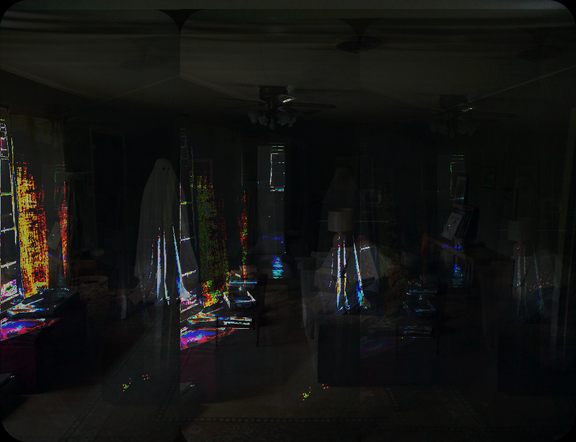

This is my first glitch image done with textedit methods of glitching

This work was done with audacity and was a pleasure to make, it also shows more of the theme I was going for with my works. I wanted to involve a "ghost" in each image, yet the last one the ghost pretty much disappears into the pink glitch.
This is by far my favorite glitched image from all three, and it also uses audacity. It really gives off a scary tone with the "ghost" actually coming off a little scary instead of more comical. This whole project I wanted to have a spin on "supernatural photos" that are so popularized in the media.